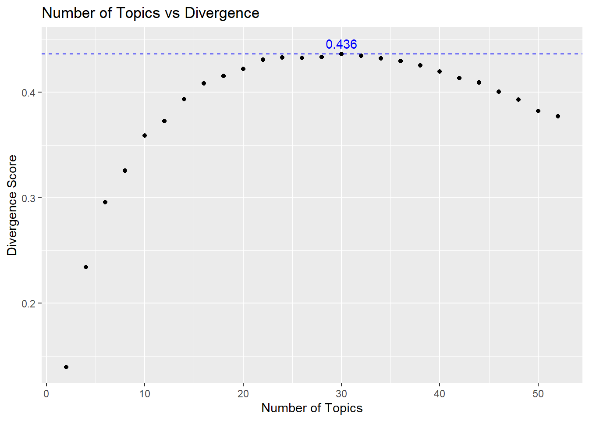
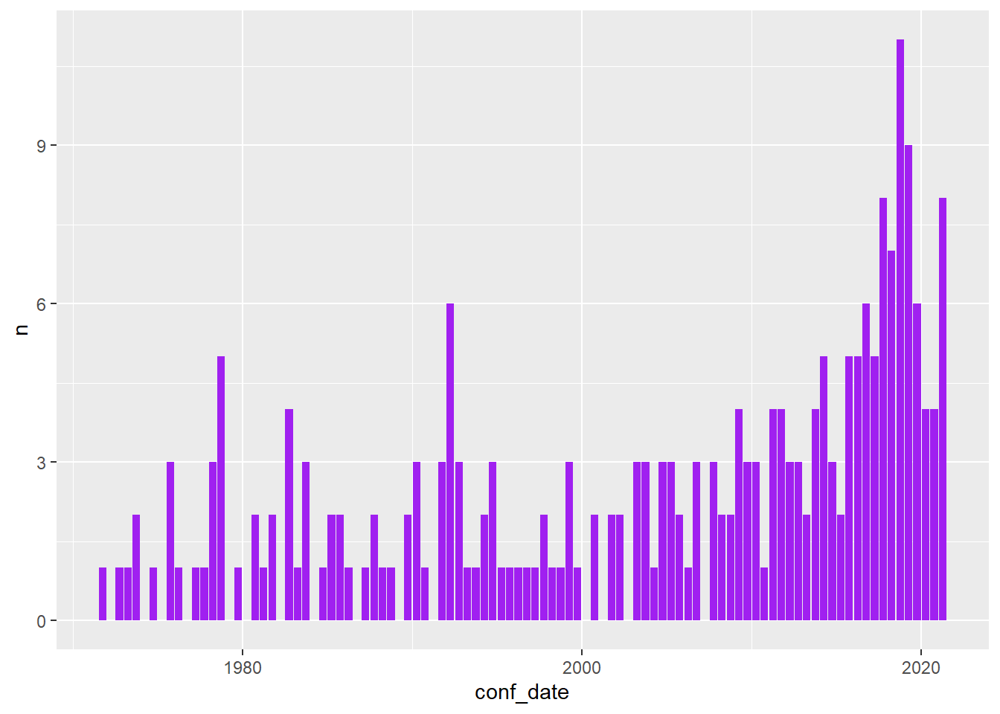

library(tidyverse)
library(quanteda)
unigram_dfm <- read_rds("data/unigram_dfm.rds")
dim(unigram_dfm)[1] 3881 16336seededlda Topic Model - Finding the best fitMatt Pickard
January 24, 2023
Semi-annually, members of The Church of Jesus Christ of Latter-day Saints gather across the world for General Conference (GC) to hear messages and talks about the gospel of Jesus Christ. These messages are delivered by prophets, apostles, and other leaders in the Church. GC occurs the first weekend of April and October. Although general conferences have occurred since the founding of the Church in 1830, [talks (and their text)] since 1971 are available on the Church’s website(https://www.churchofjesuschrist.org/study/general-conference).
GC is one of my favorite times of the year! Seriously! For me, it competes with Christmas.
Naturally, I’m curious about the topics that are taught at GC. I wanted to apply NLP topic modeling to GC.
I was able to scrape the data from the GC website.
Every semi-annual conference has 4-5 sessions. Each session contains a series of talks. There are approximately 36-40 talks across all sessions in a conference. Every talk will be a document in topic modeling. Since I have the GC dates, I can study the topics longitudinally. I’m specifically curious about how the frequency of different topics has changed over the decades.
I start simple and only deal with unigrams.
My objective in this post is to fit a topic model to the GC corpus. Therefore, I need to find the number of topics that best fits the data.
The approach is very similar to clustering – another unsupervised algorithm. I’ll fit topic models using a range of different numbers of topics (20-topic model, 22-topic model,…,n-topic). Then calculate the divergence of each model and find the model with the maximum divergence.
Perplexity is also a common metric used to explore the optimal number of topics. I use divergence because it is implemented in the
seededldapackage.
I’ll then qualitatively assess a smaller range of models near the optimal divergence range.
This post will demonstrate the beginning of this iterative quantitative-qualitative process to finding the optimal number of topics.
I used the tidytext package1 to tokenize the General Conference (GC) talks into unigrams. I removed common stopwords and did basic data cleaning. I then used cast_dfm() to convert the tidy text data frame to a document-feature matrix (DFM) compatible with quanteda. This blog post starts with this DFM of the GC talks.
quanteda does not implement topic models, so I’ll use the Latent Dirichlet Allocation (LDA) implementation provided by the seededlda package to create the topic model.
I saved the DFM in an RDS format for quick retrieval. Let’s load the data and take a look at its dimensions.
library(tidyverse)
library(quanteda)
unigram_dfm <- read_rds("data/unigram_dfm.rds")
dim(unigram_dfm)[1] 3881 16336The matrix represents 3,881 documents (GC talks) and 16,336 words (unigrams). Keep in mind that many stopwords (e.g., the, and, am, etc.) were removed. The hope is that the remaining words are significant and salient.
Like clustering algorithms, LDA requires that we specify the number of topics to fit. With close to 4k talks and 16k+ words, it wasn’t clear to me how many topics I should fit. To discover this, I leveraged the divergence metric of the topic model. seededlda, in its divergence() function, implements the Kullback-Leibler (KL) divergence, which is frequently used to measure the dissimilarities between word distributions (i.e., topics) 2.
In a nutshell, the logic of topic divergence is like this:
To find the optimal number of topics, I fit topic models with 2 to 52 topics.
Note: There was a bit of trial and error to arrive at that range.
Then I plotted their divergence scores to see where they maxed out.
Since fitting LDA models is computationally expensive, I used the furrr package – the parallelized version of purrr – on my high-powered server to fit all those models.
Then I combined the divergence score with each topic model into a data frame, so I could plot them.
library(seededlda)
library(furrr)
# create a vector for number of topics to fit
n <- seq(2, 52, by = 2)
# helper function that fits the LDA model and computes the divergence
# this is to parallelize the code with the 'furrr' package
get_div_score <- function(dfm, k) {
lda_fit <- textmodel_lda(dfm, k)
return(divergence(lda_fit))
}
# setup four threads
plan(multisession, workers = 4)
# fit models in parallel
div_scores <- n %>%
future_map_dbl(
~get_div_score(unigram_dfm, k = .x),
furrr_options(seed = TRUE))
# assemble a df with number of topics and divergence scores
div_score_df <- tibble(
num_topics = n,
div_score = div_scores
)Here’s the code to create the number of topics vs. divergence plot.
# plot topic number vs divergence score
div_score_df %>%
ggplot(aes(x = num_topics, y = div_score)) +
geom_point() +
ylab("Divergence Score") +
xlab("Number of Topics") +
geom_hline(yintercept = max(div_score_df$div_score),
color = "blue",
linetype = "dashed") +
annotate("text",
x=30,
y=max(div_score_df$div_score)+0.01,
label="0.436",
color = "blue") +
ggtitle("Number of Topics vs Divergence")
In the end, it was easier to just view the top three results in a table.
While the 30-topic model has the highest divergence, maximal divergence does not necessarily mean that that number of topics is maximally meaningful. So I took the models with the top three divergence scores (32-topic, 30-topic, and 28-topics) and explored the quality of the topics.
I created these models in parallel on my server. Here’s the code:
After the 28-, 30-, and 32-topics models were fit, I created labels for each topic based on the words that the topic was composed of to evaluate the topic quality. Here I’ll demonstrate this process with the 30- and 32-topic models.
I extracted the words per topic with the terms() function and formed them into a tibble for ease of reading. Then I proceeded to subjectively interpret the topics based on the top 10 words in each topic. I don’t believe there is a way to avoid this. Notice that I updated the column names with meaningful labels.
It is expected that there will be some noisy topics. If the topic wasn’t clear to me, I labeled it with question marks.
library(knitr)
lda30_df <- as_tibble(terms(lda_fits[[2]]))
names(lda30_df) <-
c("01_Lost_Sheep",
"02_Jesus_Christ_Savior",
"03_Priesthood_Leaders_Responsibility",
"04_Spiritual_Light_of_the_World",
"05_Gospel_Scripture_Study",
"06_Sins_Repentace_Atonement",
"07_Lords_People_Zion??",
"08_Missionary_Service",
"09_Joseph_Smith",
"10_Church_Welfare_Fast_Offerings",
"11_???",
"12_Book_of_Mormon_Scripture_Reading",
"13_???",
"14_Priesthood_Power_Keys",
"15_Sustain_Church_Officers",
"16_Holy_Ghost_Testimony",
"17_Love_of_God_Jesus_Christ",
"18_Prayer",
"19_Time_to_Choose_Eternal_Life",
"20_Relief_Society",
"21_Sacrament_Sabbath_Day",
"22_Temple_Covenants_Blessings",
"23_Gods_Plan_Eternal_Life",
"24_???",
"25_Morals_Standards??",
"26_Faith_in_Jesus_Christ",
"27_??",
"28_Prophet_President",
"29_???",
"30_Family_Home"
)
kable(lda30_df)| 01_Lost_Sheep | 02_Jesus_Christ_Savior | 03_Priesthood_Leaders_Responsibility | 04_Spiritual_Light_of_the_World | 05_Gospel_Scripture_Study | 06_Sins_Repentace_Atonement | 07_Lords_People_Zion?? | 08_Missionary_Service | 09_Joseph_Smith | 10_Church_Welfare_Fast_Offerings | 11_??? | 12_Book_of_Mormon_Scripture_Reading | 13_??? | 14_Priesthood_Power_Keys | 15_Sustain_Church_Officers | 16_Holy_Ghost_Testimony | 17_Love_of_God_Jesus_Christ | 18_Prayer | 19_Time_to_Choose_Eternal_Life | 20_Relief_Society | 21_Sacrament_Sabbath_Day | 22_Temple_Covenants_Blessings | 23_Gods_Plan_Eternal_Life | 24_??? | 25_Morals_Standards?? | 26_Faith_in_Jesus_Christ | 27_?? | 28_Prophet_President | 29_??? | 30_Family_Home |
|---|---|---|---|---|---|---|---|---|---|---|---|---|---|---|---|---|---|---|---|---|---|---|---|---|---|---|---|---|---|
| sheep | jesus | church | light | gospel | repentance | lord | mission | joseph | welfare | alma | book | brother | priesthood | manifest | holy | love | father | life | women | sacrament | temple | god | church | god | faith | time | president | lord | children |
| water | christ | priesthood | peace | church | sins | god | missionaries | smith | church | ne | mormon | home | church | presidency | spirit | christ | prayer | time | society | day | covenants | eternal | people | evil | christ | don’t | lord | thy | family |
| king | son | bishop | world | learn | christ | people | missionary | church | poor | god | read | mother | power | sustain | ghost | jesus | heavenly | path | relief | remember | blessings | life | lord | world | jesus | day | church | thou | home |
| god | father | quorum | christ | teach | atonement | world | gospel | prophet | services | mosiah | christ | hand | authority | president | god | church | god | happiness | sisters | sabbath | covenant | father | conference | life | god | life | prophet | ye | parents |
| lost | god | stake | darkness | principles | jesus | earth | serve | god | lord | lord | scriptures | president | brethren | favor | lord | savior | pray | hope | woman | sacrifice | ordinances | plan | world | people | lord | boy | god | god | families |
| lord | john | ward | spiritual | taught | sin | day | church | christ | tithing | jesus | jesus | life | aaronic | twelve | testimony | god | love | lives | sister | time | family | earth | saints | moral | testimony | home | conference | thee | love |
| life | life | president | life | study | repent | land | lord | jesus | fast | ye | god | words | keys | proposed | christ | day | lord | eternal | daughters | sunday | lord | christ | temple | lord | power | told | kimball | shalt | marriage |
| david | death | leaders | time | spiritual | savior | zion | time | gospel | people | patience | words | day | hold | quorum | receive | life | feel | choose | church | meeting | sacred | world | building | satan | lives | school | prophets | commandments | mother |
| shepherd | world | home | gospel | scriptures | mercy | nations | service | day | family | people | nephi | found | god | church | gift | gospel | son | lord | president | music | receive | jesus | day | standards | life | father | hinckley | matt | father |
| time | savior | responsibility | truth | doctrine | god | time | elder | earth | food | heart | word | ago | lord | counselor | power | sisters | heart | follow | world | sacred | temples | lord | sisters | live | gospel | love | called | words | wife |
lda32_df <- as_tibble(terms(lda_fits[[1]]))
names(lda32_df) <-
c("01_Sustain_Church_Officers",
"02_Repentence",
"03_Church_Audit_Financial",
"04_Gospel_Scripture_Study",
"05_Jesus_Christ_Resurrection",
"06_Spiritual_Light_of_the_World",
"07_???",
"08_???",
"09_Prophet_President",
"10_Tithing",
"11_Standards_Against_Evil??",
"12_Priesthood_Power_Keys",
"13_Conference???",
"14_Book_of_Mormon_Joseph_Smith",
"15_Holy_Ghost_Prayer_Testimony",
"16_Marriage_Family",
"17_Church_Leaders",
"18_Church_Welfare_Fast_Offerings",
"19_Gods_Plan_Eternal_Life",
"20_Covenants",
"21_Joy_Suffering_Faith",
"22_Tree_of_Life_Path???",
"23_Missionary_Service",
"24_Church_of_Jesus_Christ",
"25_Faith_in_Jesus_Christ",
"26_Temple_Ordinances",
"27_Lords_People???",
"28_Love_Jesus_Christ",
"29_???", # I think this is my garbage topic
"30_Relief_Society_Women",
"31_Family_Home",
"32_???" # I think this is a garbage topic too
)
kable(lda32_df)| 01_Sustain_Church_Officers | 02_Repentence | 03_Church_Audit_Financial | 04_Gospel_Scripture_Study | 05_Jesus_Christ_Resurrection | 06_Spiritual_Light_of_the_World | 07_??? | 08_??? | 09_Prophet_President | 10_Tithing | 11_Standards_Against_Evil?? | 12_Priesthood_Power_Keys | 13_Conference??? | 14_Book_of_Mormon_Joseph_Smith | 15_Holy_Ghost_Prayer_Testimony | 16_Marriage_Family | 17_Church_Leaders | 18_Church_Welfare_Fast_Offerings | 19_Gods_Plan_Eternal_Life | 20_Covenants | 21_Joy_Suffering_Faith | 22_Tree_of_Life_Path??? | 23_Missionary_Service | 24_Church_of_Jesus_Christ | 25_Faith_in_Jesus_Christ | 26_Temple_Ordinances | 27_Lords_People??? | 28_Love_Jesus_Christ | 29_??? | 30_Relief_Society_Women | 31_Family_Home | 32_??? |
|---|---|---|---|---|---|---|---|---|---|---|---|---|---|---|---|---|---|---|---|---|---|---|---|---|---|---|---|---|---|---|---|
| manifest | alma | church | gospel | jesus | light | king | brother | president | lord | evil | priesthood | church | book | holy | marriage | church | welfare | life | covenants | life | life | mission | church | faith | temple | lord | love | time | women | children | thou |
| presidency | sins | program | scriptures | god | darkness | lord | home | church | tithing | world | power | people | mormon | spirit | love | bishop | church | god | covenant | joy | water | missionaries | christ | christ | family | people | christ | don’t | society | family | thy |
| sustain | repentance | department | learn | christ | ne | god | mother | prophet | pay | people | lord | conference | joseph | ghost | wife | quorum | poor | eternal | lord | suffering | journey | missionary | jesus | peace | temples | god | jesus | life | relief | home | lord |
| president | christ | auditing | study | father | god | courage | hand | lord | sacrifice | god | brethren | saints | smith | lord | god | ward | services | plan | sacrament | lord | path | church | god | hope | ordinances | earth | god | day | sisters | parents | ye |
| favor | god | membership | spiritual | life | jesus | israel | father | god | money | standards | god | salt | prophet | father | life | stake | fast | commandments | day | jesus | tree | serve | gospel | jesus | lord | world | savior | father | woman | father | god |
| proposed | sin | funds | teach | son | spiritual | david | words | joseph | day | moral | authority | city | read | god | children | home | program | happiness | holy | god | christ | gospel | world | lord | house | day | father | didn’t | sister | families | thee |
| quorum | repent | education | taught | death | world | stand | ago | conference | blessings | satan | aaronic | lake | christ | prayer | family | president | people | father | blessings | faith | time | service | day | god | blessings | land | sisters | school | church | love | jesus |
| twelve | ye | council | word | world | time | daniel | day | smith | time | youth | keys | lord | god | pray | husband | leaders | principles | choose | christ | pain | jesus | time | truth | power | sacred | time | heavenly | boy | president | teach | shalt |
| counselor | jesus | financial | christ | resurrection | christ | people | president | kimball | people | life | hold | day | jesus | words | eternal | priesthood | food | heavenly | sacred | healing | follow | lord | earth | life | dead | nations | feel | remember | daughters | mother | matt |
| church | atonement | percent | principles | earth | truth | hand | life | prophets | life | clean | duty | world | lord | testimony | woman | teachers | family | god’s | remember | trials | day | elder | true | lives | time | days | heart | friends | mother | child | love |
To wrap my mind around the pros and cons of the two models. I captured some of the differences in this table.
This is where contextual knowledge of the data is needed.
| 30-Topic Model | 32-Topic Model |
|---|---|
| Book of Mormon gets paired with scriptures and scripture reading. Joseph Smith has his own topic. | Book of Mormon gets paired with joseph smith |
| Prayer has its own topic. | prayer gets placed inside the The Holy Ghost and Testimony topic. |
| Jesus Christ is paired with savior | Jesus Christ is paired with resurrection. |
| Seems to have a Lost Sheep topic. | There is not topic that contains sheep. |
| sacrament is paired with sabbath day (topic #21) | sacrament is paired with covenants. |
| tithing is found under the Church Welfare topic. | tithing is paired with sacrifice and pay, which seems to solidly form a Tithing topic |
I like the fact that Joseph Smith has his own topic in the 30-topic model; and, it probably makes more sense to bundle the Book of Mormon with scriptures (since it is part of the scriptural canon of The Church of Jesus Christ of Latter-day Saints) than it does with Joseph Smith (who translated it). A strong nudge to favor the 30-topic model.
Prayer and Christ’s direction to find and feed His “lost sheep” are both very common topics in GC talks. The 30-topic has separate topics for each of these. That’s a couple of votes for the 30-topic model.
I especially like that the Jesus Christ topic contains savior. I prefer that associate as Savior over the associate with resurrection in the 32-topic model. I view His resurrection as part of His saving.
Members of the Church meet together on Sundays (the Sabbath day) to partake of the Sacrament (i.e., the Lord’s Supper), so it’s very appropriate to associate the Sacrament with the Sabbath day. However, the Sacrament is a time for church members to remember the covenants they made at baptism; so it’s equally appropriate to associate the Sacrament with covenants as well. So, this point is a wash.
Tithing as its own topic (in the 32-topic model) is appealing. A win for the 32-topic model. However, tithing is often spoken of in the context of fast offerings. Fast offerings are free-will monetary offerings given in conjunction with a fast – the money saved from skipping meals during the fast is donated to help the poor and needy. A counter for the 30-topic model. But the 32-topic option highlights tithing in terms of sacrifice. You might consider tithing as a baseline measure of an individual’s willingness to sacrifice for the Lord. A stronger counter for the 32-topic model.
So, overall, we’ll go with the 30-topic model.
As I explored models with more topics, I discovered that other topics crystalized, examples include youth and the latter days, home teaching (a program to ensure members of the church are taken care of and watched over), pioneers and trek to Salt Lake City, and revelation.
Let’s pull out the 30-topic model.
Now that we have a finalized topic model, let’s look at the results.
First, I’ll use the LDA model to predict the topic of each of the talks. To do this, I’ll use topics(lda30_fit). That returns a named list, like this:
1971_04_a_witness_and_a_blessing 1971_04_all_may_share_in_adams_blessing
topic9 topic22
1971_04_be_slow_to_anger 1971_04_choose_you_this_day
topic4 topic7
1971_04_drink_of_the_pure_water 1971_04_eternal_joy_is_eternal_growth
topic26 topic23
30 Levels: topic1 topic2 topic3 topic4 topic5 topic6 topic7 topic8 ... topic30So, I assemble a data frame with the doc_ids and the topic_ids.
Since the topic_ids are not very helpful, I’ll combine them with the topic labels I created above and join them into the talk data frame.
I’d like to explore the number of talks at each conference over time, so I’ll aggregate the topic counts for each conference.
Now, we are ready to plot. I did quite a bit of exploration and came across this plot. I found it interesting that the “Love_of_God_Jesus_Christ” topic has become more prevalent since about 2010.
conf_topic_counts_df %>%
filter(topic_label == "Love_of_God_Jesus_Christ") %>%
ggplot(aes(x=conf_date, y=n)) +
geom_col(fill = "purple") +
theme(legend.position = "none")
Here is a list of the top 20 words in the Love_of_God_Jesus_Christ topic (it was topic 17).
So, topic modeling isn’t perfect. But, like an impressionist painting, it gives a clearer picture of the categories found in a large corpus.
Thanks to Julia Silge and contributors for making the tidytext package and for authoring Text Mining with R.↩︎
Romain Deveaud, Eric Sanjuan, Patrice Bellot. Accurate and Effective Latent Concept Modeling for Ad Hoc Information Retrieval. Document numérique- Revue des sciences et technologies de l’information. Série Document numérique, 2014, pp.61-84.↩︎